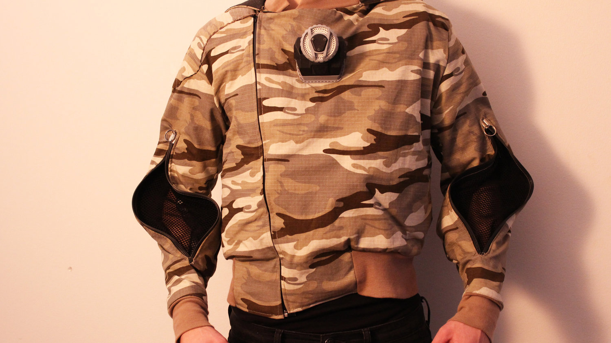
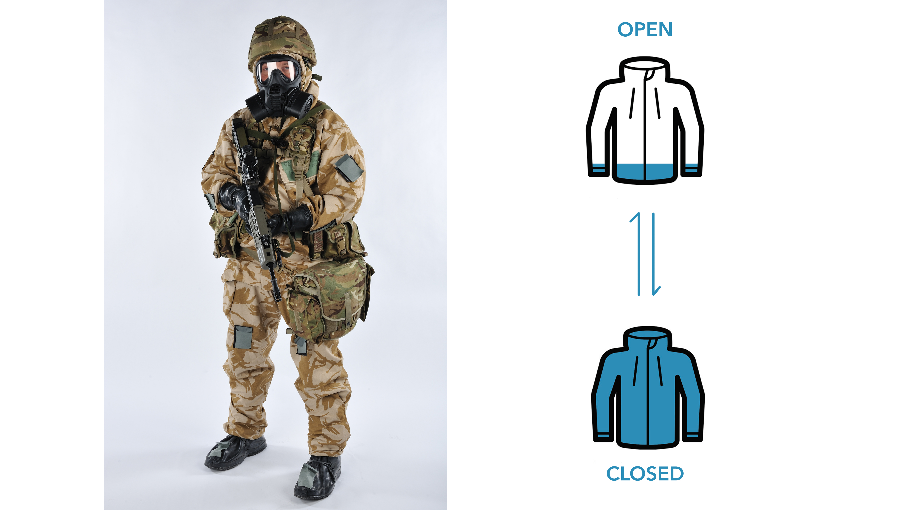
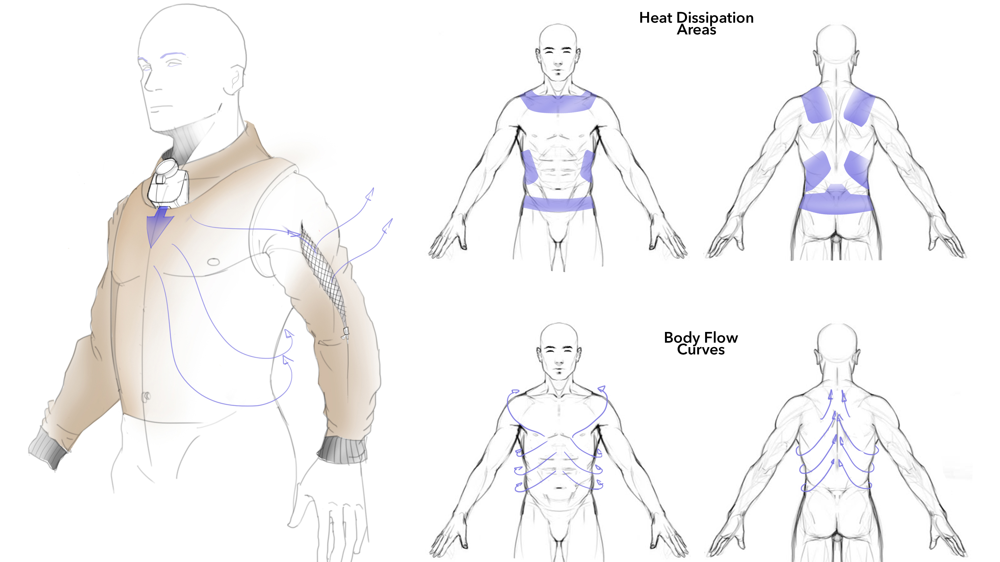
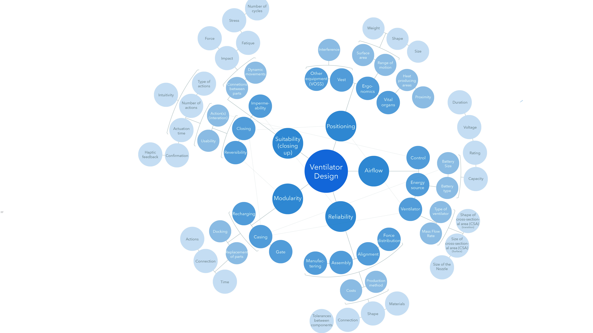

Hybrid Suit

A suit designed for CBRN soldiers which can adapt accordingly, to reduce thermal burden and increase comfort.
The Problem

Current CBRN suits offer slower adaptability to harmful gases, risking the soldiers of thermal burden. Thus, the idea of a switchable suit.
The Concept

was to have a switchable cooling system that would cool the hottest areas of the body via a pressurized fan, blowing air around the suit.
Exploration Web

Many factors were explored to validate the feasibility of the ventilator system,including the pathways, ventilator and sleeves.
Testing

To understand the flow of air, prototypes were tested under pressure mats to check the most compressed areas on the body.
Pathways

The resulting design was made out of foam and patched up within the suit in different parts to channel air throughout the body.
Ventilator design

The Ventilator system was prototyped to embody air intake functions and also to alert the user on exposure to gases.
Final Design

The knob controls the air intake in the pressure system, providing different levels of ventilation for different missions.
❮
❯